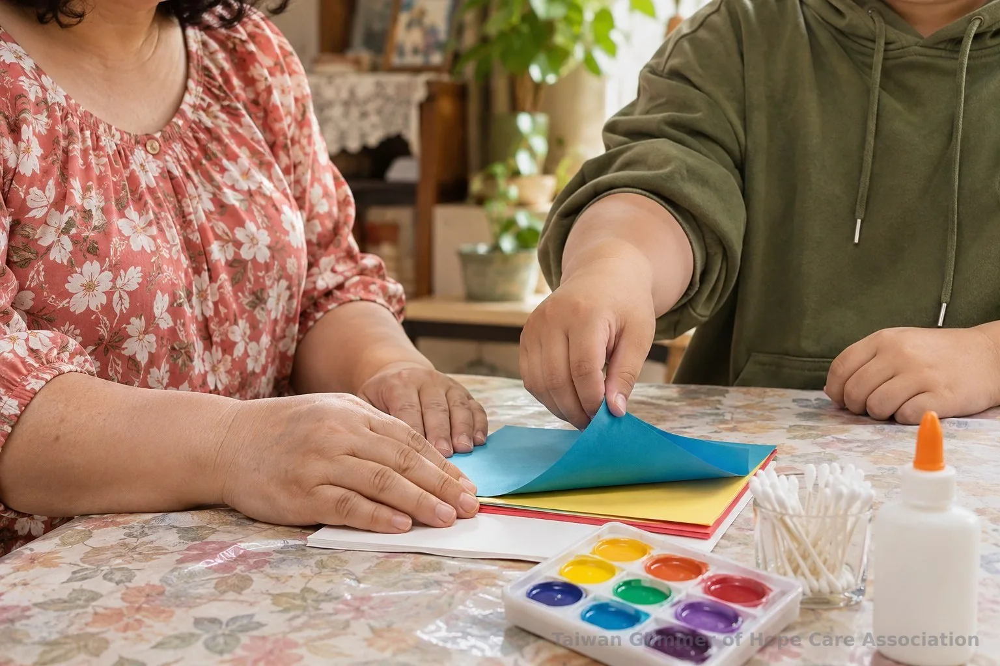
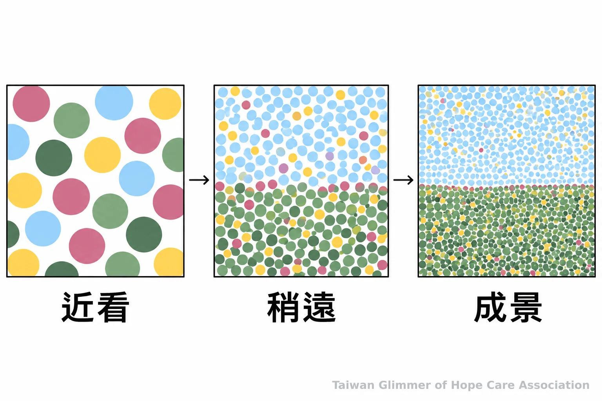
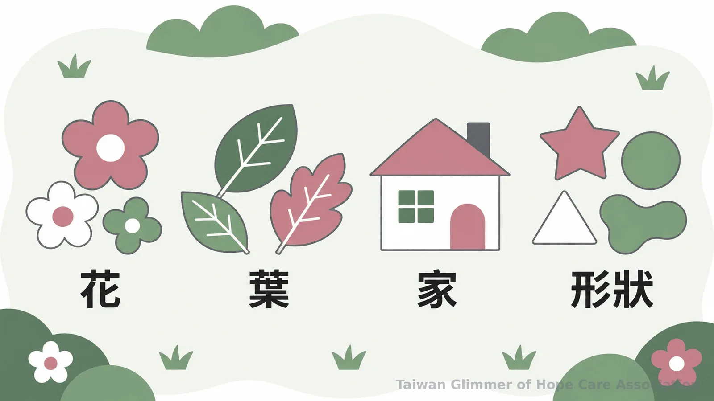

微光藝術陪伴如何在家玩？3種名畫手作
用秀拉點描、馬蒂斯剪紙與夏卡爾夢想花園，陪孩子在家從選色、剪貼到自由創作。整理材料、安全與陪伴原則，並介紹微光據點的藝術課程。
在家美術可以從一張紙、幾種顏色和孩子的選擇開始。秀拉點描、馬蒂斯剪紙與夏卡爾夢想花園，都能轉成簡單的親子活動。活動重點是一起創作，不要求作品像名畫，也不把畫作當成心理判讀工具。兒少藝術活動的安全界線可參考課程安全設計。
開始前先準備適齡材料，讓孩子有選擇
準備厚紙、色紙、可水洗顏料或蠟筆、棉花棒與膠水，再依孩子年齡挑選工具；桌面鋪上容易清理的墊子即可開始。
幼兒使用材料時要有成人陪同。顏料、剪具與小零件依年齡提醒挑選，細小物品收在孩子拿不到的位置；選購時可查閱美國消費品安全委員會的美術材料資料，並留意所在地規範與產品標示。
材料分成少量即可。孩子不想碰顏料，可以用蠟筆；還不適合用剪刀時，大人先剪好形狀，孩子負責挑選和排列。

秀拉點描：讓色點慢慢拼成畫面
用棉花棒沾少量顏料，在紙上點出不同顏色，再從遠近兩種距離看看色點怎麼組成畫面。
美國國家藝廊《Picturing France》教學資料收錄點描畫活動。家長可挑兩三種顏色，用點點排出草地、天空、花朵或抽象圖形，不必先描輪廓。
完成一小塊後，可以問：「靠近看見什麼？站遠一點又像什麼？」棉花棒也可換成海綿或蠟筆。照片與紀錄，請見〈板橋明穗據點：點描法，一點一點畫出自己的世界〉。
美國國家藝廊介紹馬蒂斯剪紙時，引用他稱這種創作為「painting with scissors」（用剪刀作畫）。

馬蒂斯剪紙：先移動形狀，再決定位置
準備色紙、底紙、膠水和適齡剪具；先剪出幾個大形狀，移動到喜歡的位置後再黏貼。
馬蒂斯晚年以剪下的彩紙組合圖案。家中可用色紙或乾淨包裝紙，拼成魚、葉子、船或幾何形狀。先移動紙片，再黏貼；不會剪時可撕紙或由成人預先剪好。
可以問「哪一片想放在最前面？」照片與紀錄，請見〈板橋明穗據點：用馬蒂斯的拼貼，做一張自己的雜誌封面〉。
夏卡爾夢想花園：把想像放進拼貼裡
用底紙、色紙和蠟筆，剪或撕出花朵、葉片與想像中的形狀，再由孩子安排它們在花園裡的位置。
先讓孩子選底色，再挑選花朵、房子或想像中的生物。材料有限時，可先替白紙塗色再剪貼，也能直接畫。
分享時，大人可問「你想先介紹哪裡？」或「還想添上什麼？」不猜測顏色或形狀代表什麼。微光瑞芳據點以夏卡爾為主題進行夢想花園課程，照片與紀錄，請見〈瑞芳愛鄰據點：跟著夏卡爾，飛進我的夢想花園〉。

微光如何把藝術帶進據點課堂
微光與在地照顧脆弱家庭孩子的單位合作，以藝術家作品引出創作主題，讓孩子選材料、分享作品，不以畫得像不像作為比較。
微光把這種合作稱為「在地小衛星」。瑞芳愛鄰是協會起點，板橋明穗與中壢宣愛也有藝術陪伴課，每個據點每月一堂。課程以「心情的顏色」、點描或拼貼引導創作，最後邀請孩子用「我看到」或「我喜歡」分享作品。活動提供表達機會，不能取代心理治療，也不以畫作判定受虐或推斷家庭狀況。
台灣微光希望關懷協會理事長林秀霞說：「孩子是需要被鼓勵、被肯定的。」大人可以肯定孩子挑選顏色或安排紙片的想法，留一段不趕作品的共創時間。
常見問題
依年齡選擇安全材料，讓孩子保有選擇，作品不必完成得像範本，也不拿來判讀心理狀態。
Q1: 家裡沒有畫具，可以用什麼？
可用影印紙、乾淨包裝紙、蠟筆和色紙；材料依孩子年齡挑選，避免幼兒接觸容易入口的小物件。
Q2: 孩子不想照名畫做，怎麼辦？
讓孩子改畫或拼自己想做的內容。名畫提供創作點子，沒有必須照著完成的標準答案。
Q3: 剪刀由誰使用？
依年齡、能力和剪具標示決定。幼兒可由成人先剪好形狀，再讓孩子負責選擇、擺放與黏貼；使用剪刀時由成人陪同。
Q4: 孩子的作品可以拍照分享嗎？
分享前先確認孩子和照顧者是否同意，並遮去姓名、學校、住家等資訊。《兒童及少年福利與權益保障法》第69條禁止媒體或任何人公示揭露特定案件兒少可識別身分的資訊，作品照片也要留意是否會辨認出孩子。
Q5: 發現孩子可能遭受不當對待，可以怎麼求助？
可撥衛生福利部113保護專線諮詢或通報；一般民眾不需自行查案或作保護決定，向接線人員說明所知情況即可。衛福部說明專線全年24小時服務；若有立即人身安全危險，先撥110。
- 秀拉點描從色點觀察開始，馬蒂斯剪紙先排列形狀，夏卡爾花園讓孩子安排自己的想像。
- 大人陪伴時照顧材料安全、保留選擇，不以作品診斷心理或判定受虐。
今天可以選一種材料，和孩子留一小段桌面時間。系列標籤：在家也能做的藝術陪伴｜系列六之 2。若有兒少保護疑慮，可撥衛福部113保護專線；遇到立即危險請撥110。
參考文獻
- National Gallery of Art. (2008). Picturing France: Classroom Guide. https://www.nga.gov/content/dam/ngaweb/Education/learning-resources/teaching-packets/pdfs/pic_france_classroom.pdf
- National Gallery of Art. (n.d.). Art Tales: Henri Matisse. https://www.nga.gov/educational-resources/art-tales-pre-k/art-tales-henri-matisse
- U.S. Consumer Product Safety Commission. (n.d.). Art Materials. https://www.cpsc.gov/FAQ/art-materials
- 衛生福利部保護服務司。（更新於2026-11-03）《113保護專線介紹》。https://dep.mohw.gov.tw/DOPs/cp-1183-6499-105.html
- 全國法規資料庫。《兒童及少年福利與權益保障法》。https://law.moj.gov.tw/LawClass/LawAll.aspx?PCode=D0050001
本文同步刊於 appi.news。